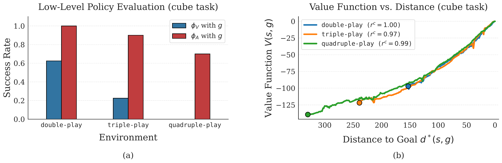
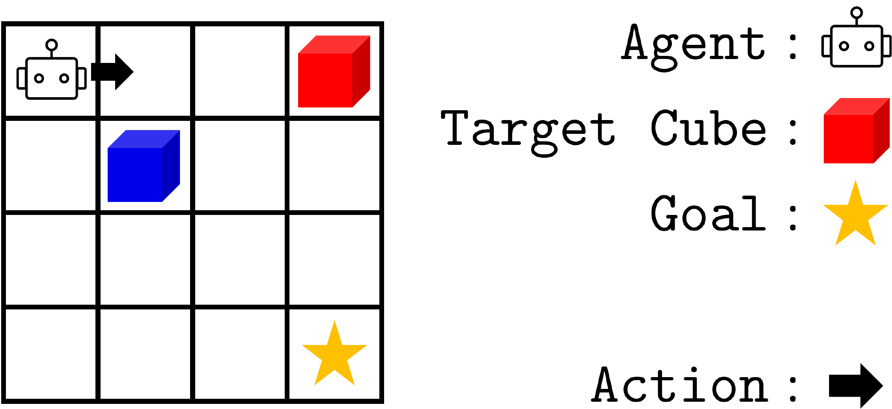
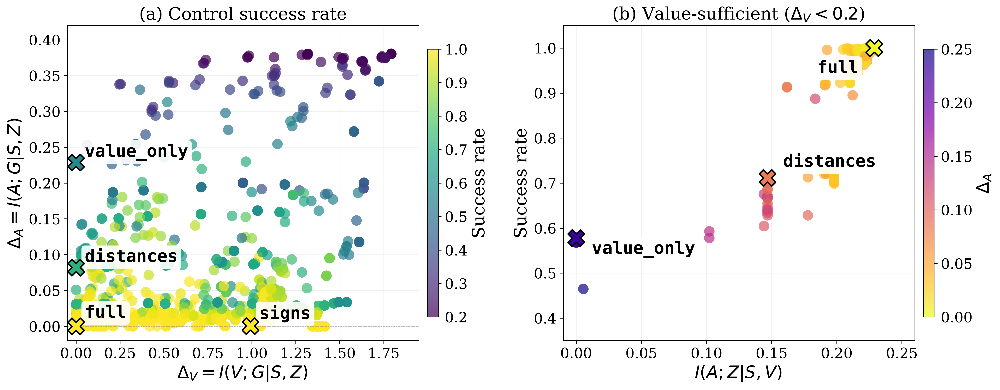
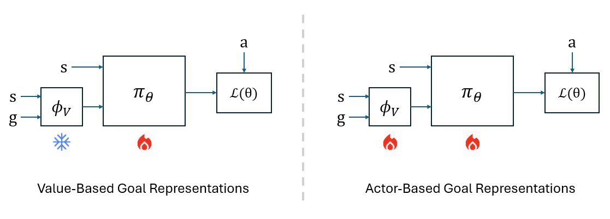
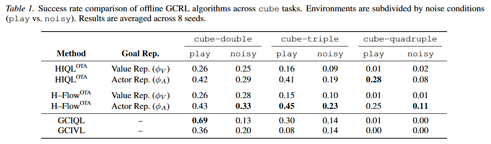

Standard hierarchical GCRL methods typically utilize a latent goal encoder learned from a value function objective. This practice assumes that features optimized for predicting values are sufficient for optimal control.

As shown in (b), even when a value function exhibits high order consistency—confirming it has successfully learned the temporal structure of the task—the resulting policy can still fail. In (a), agents utilizing value-centric representations (\(\phi_V\)) exhibit markedly low success rates compared to actor-based representations (\(\phi_A\)), even when provided with oracle subgoals.
This indicates that the information preserved for value prediction is not necessarily sufficient for optimal control. Key Message: A representation can retain all information needed to recover the optimal value while still collapsing distinct goals that require different optimal actions.
We formalize this discrepancy through the Conditional KL Risk, measuring the divergence between the optimal policy and a learned predictor restricted to the representation:
$$\mathcal R(\pi^\ell;\phi) = \mathbb{E}\left[ D_{\text{KL}}(P(A|S, G) \,\|\, \pi^\ell(A|S, Z)) \right]$$As per Proposition 4.1, this risk decomposes into a modeling error and an irreducible representation error:
$$\mathcal R(\pi^\ell;\phi) = \underbrace{\mathbb{E}\left[ D_{\text{KL}}(P(A|S, Z) \,\|\, \pi^\ell(A|S, Z)) \right]}_{\text{Modeling Error}} + \underbrace{I(A; G \mid S, Z)}_{\text{Representation Error}}$$Based on this decomposition, we define the Action-Sufficiency Gap (\(\Delta_A := I(A; G \mid S, Z)\)). A representation \(Z=\phi(S,G)\) is Action-Sufficient if \(\Delta_A = 0\). We similarly define the Value-Sufficiency Gap (\(\Delta_V := I(V; G \mid S, Z)\)), where \(V\) is the optimal value function.
If a representation is value-sufficient (\(\Delta_V = 0\)), the action-sufficiency gap decomposes as (Proposition 5.2):
$$\Delta_A = I(A; G \mid S, V) - I(A; Z \mid S, V)$$Takeaway: Value sufficiency does not imply action sufficiency, as the gap \(\Delta_A\) can remain positive even when \(\Delta_V = 0\). A representation can perfectly predict optimal values yet still fail to predict optimal actions.

To validate these findings, we introduce the Discrete Cube environment—a grid-world designed for exact information-theoretic analysis.

Exact analysis in this domain confirms our structural claims: control success rate correlates much more strongly with the action-sufficiency gap (\(\Delta_A\)) than with the value-sufficiency gap (\(\Delta_V\)). For value-sufficient \(\phi\), the \(I(A; Z \mid S, V)\) term mainly determines the action-sufficiency gap \(\Delta_A\), and thus the final performance.

We propose learning the goal encoder \(\phi\) jointly with the policy head by directly minimizing the Negative Log-Likelihood (NLL) loss:
$$\mathcal L_{\mathrm{act}}(\theta,\phi) := \mathbb{E}\!\left[-\log \pi_\theta\!\left(A \mid S, \phi(S,G)\right)\right]$$Theoretical Guarantees: Lemma 7.1 shows this NLL loss decomposes into the environment's conditional entropy and the conditional KL risk. Theorem 7.2 ensures that achieving near-optimal Actor NLL implies approximate action sufficiency (\(\Delta_A \le \varepsilon\)).
We evaluated our approach using OGBench on challenging robotic manipulation tasks.

Our actor-based representation (\(\phi_A\)) yields consistent performance gains, particularly in high-difficulty tasks like cube-quadruple. When combined with generative backbones like Flow Matching, our method effectively handles multimodal action distributions, leading to superior success rates.
@inproceedings{hyeon2026action,
title = {Action-Sufficient Goal Representations},
author = {Hyeon, Jinu and Park, Woobin and Ahn, Hongjoon and Moon, Taesup},
booktitle = {Proceedings of the 43rd International Conference on Machine Learning},
year = {2026}
}